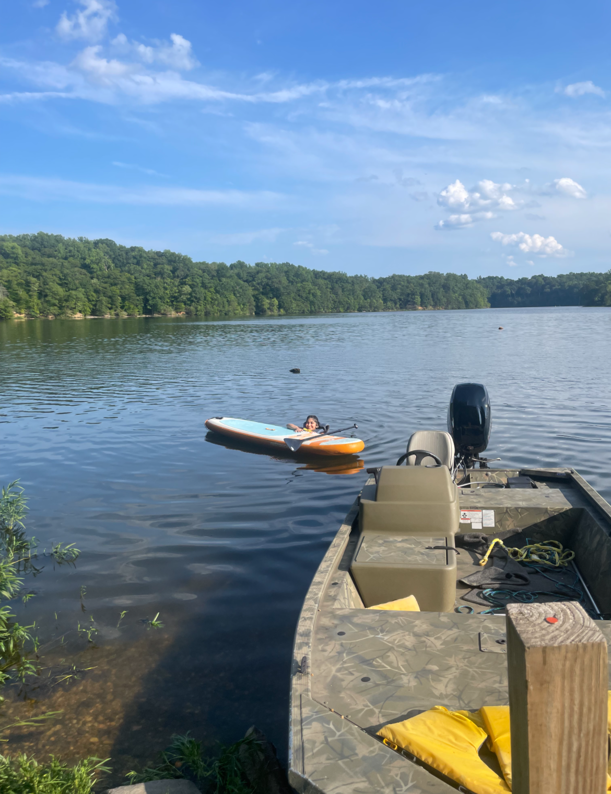
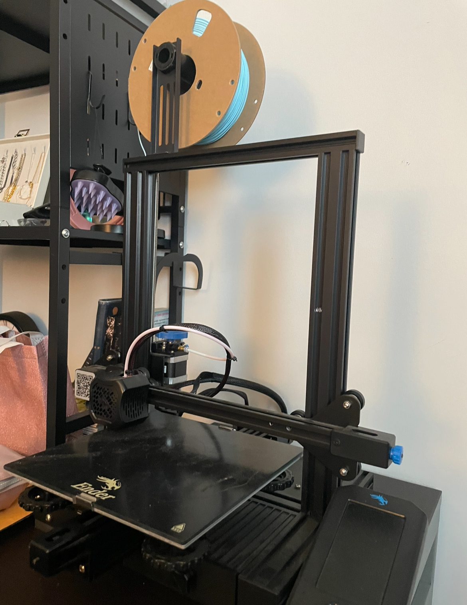
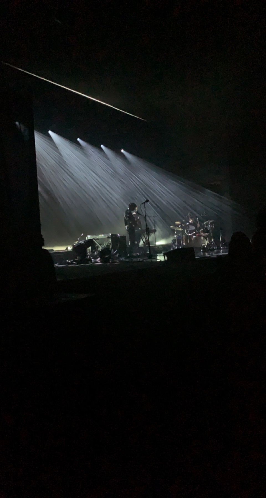

What am I doing
in my free time?
I do a lot of things in my free time including cooking, going to the gym, going on hikes, skateboarding, ice skating, and gardening! Here are the hobbies I spend most of my time doing.
I love listening to music on Spotify! Click the icon above to see my playlists.

I love the outdoors, especially paddleboarding and going on picnics!

I love building things with my 3D printer! As an engineer, it's exciting to design and create new objects from scratch.

My favorite hobby is going to concerts! This photo is from a Beach House concert I went to with my friends in DC. I love the energy and memories from live music shows.